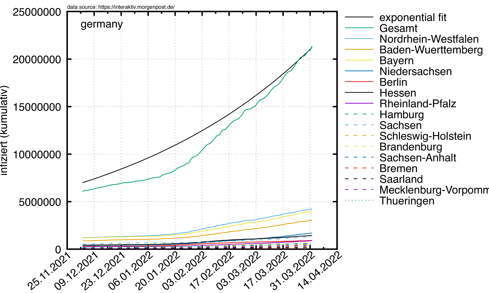
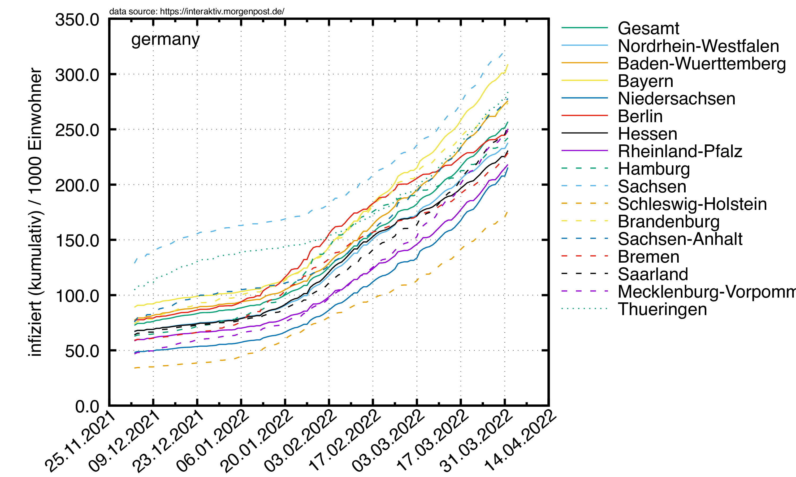
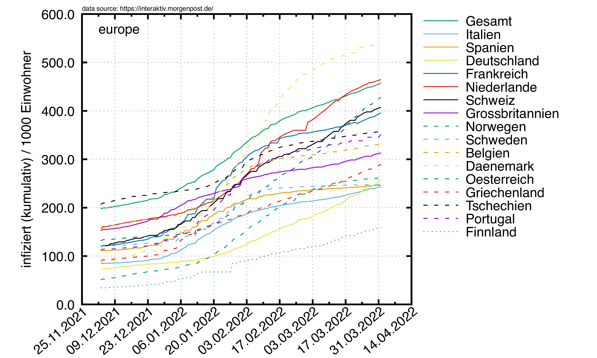
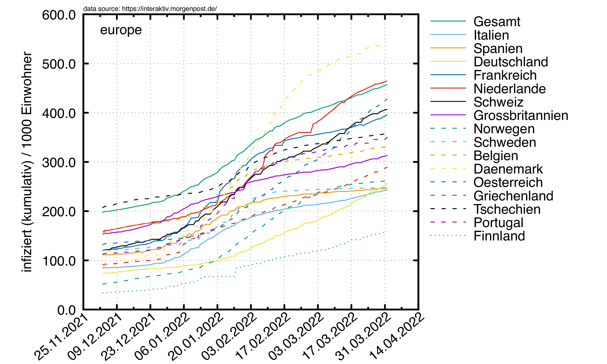
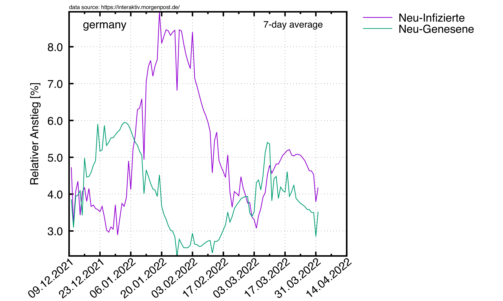
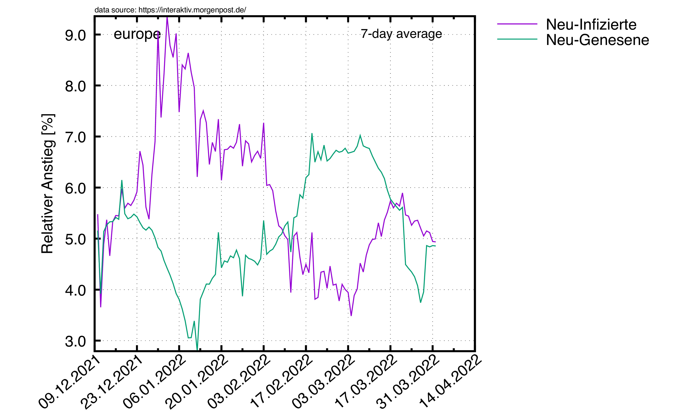
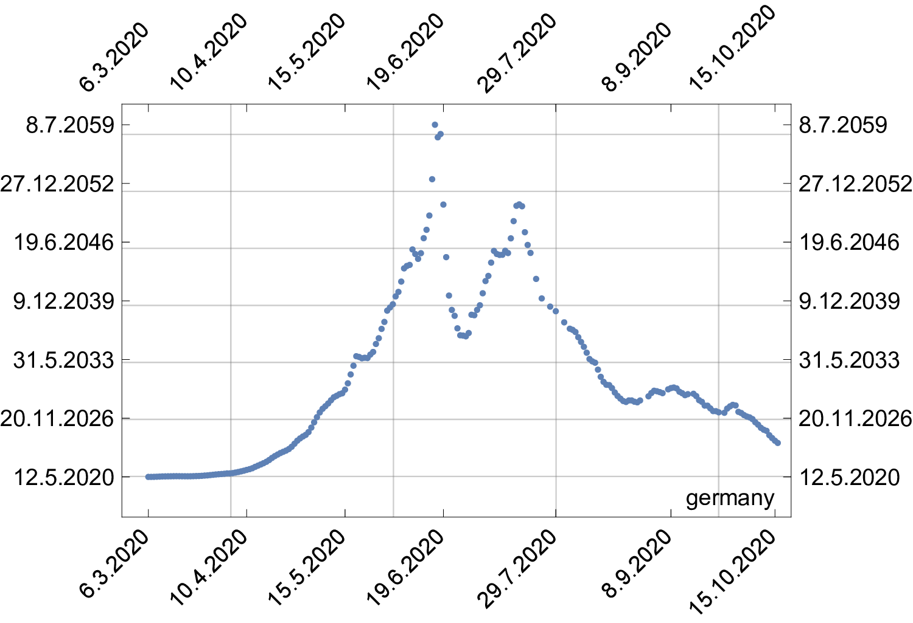

Corona Virus
Studien zum Corona-Virus
© 2020 by R. Harlander
based on data taken from this URL
|
In einer Welt, in der eine e-Funktion Erstaunen auslöst,
ist
Statistik ein Fremdwort.
J. Schnelzer, 2020
|
Stand: 09. Dezember 2020
Disclaimer: Alle Zahlen sind höchst inoffiziell und dürfen
in keiner Weise weiterverwendet werden. Die offiziellen
Zahlen hat das RKI.
Warum dann diese Seite? Weil es viele tolle Plots gibt,
die es sonst nirgends gibt:
ein animiertes "flatten the curve";
einen verständlichen R-Wert (Robl),
der keine Geheimnisse daraus macht, was in ihm steckt;
einen einzigartigen Apokalypsen-Plot;
eine neue Darstellung des relativen Anstiegs.
Braucht man mehr?
News:
- 14. August 2020:
-
-
-
Plots unterm Mauszeiger werden gezoomt.
- 12. August 2020:
-
-
-
Datums-Format an den Plots geändert.
- 10. August 2020:
-
-
-
An manchen Stellen sind jetzt die logarithmischen Plots ersetzt
durch Plots pro 1000 Einwohner. Auch hier liegen USA und Brasilien
ganz weit vorn.
 Der Plot zeigt die Gesamtzahl der am Corona-Virus erkrankten Menschen
in Deutschland auf einer logarithmischen Skala,
sowie diese Zahl nach Bundesländern aufgespalten.
Zusätzlich ist ein exponentieller Fit an die Gesamtzahl eingezeichnet.
Der Schnittpunkt mit der grünen horizontalen Linie entspricht dem
Zeitpunkt, an dem alle in Deutschland lebenden Menschen infiziert sind
(gemäß diesem sehr vereinfachten exponentiellen Modell).
Der Plot zeigt die Gesamtzahl der am Corona-Virus erkrankten Menschen
in Deutschland auf einer logarithmischen Skala,
sowie diese Zahl nach Bundesländern aufgespalten.
Zusätzlich ist ein exponentieller Fit an die Gesamtzahl eingezeichnet.
Der Schnittpunkt mit der grünen horizontalen Linie entspricht dem
Zeitpunkt, an dem alle in Deutschland lebenden Menschen infiziert sind
(gemäß diesem sehr vereinfachten exponentiellen Modell).
Der Schnittpunkt wandert tendenziell in die Zukunft, was bedeutet, dass
die exponentielle Infizierungsrate abnimmt. Diese Verschiebung
ist im Plot weiter unten gezeigt.
Hier nochmal die aktuellen Zahlen in linearer Auftragung.
Links: absolute Zahlen; rechts: pro 1000 Einwohner.
Der exponentielle Fit bezieht nur die letzten 10 Tage mit ein.


Die selben Plots für Europa.
 

Die selben Plots für andere Länder.


Nun die Zahl der momentan Infizierten, also die Differenz aus Infizierten
und wieder Genesenen.
Als nächstes die Zahl der
Neu-Infektionen ("new infections") und die Zahl der neu
nicht-mehr-Infizierten ("removed") pro Tag in Deutschland, Europa und
anderen Länder ("world"), gemittelt über 10-Tage-Intervalle.
Rechts: aufgeschlüsselt nach Ländern, pro 1000 Einwohner.
Jetzt noch die Reproduktionszahl, berechnet
gemäß
Robl
= ΔI/ΔG, wobei ΔI die Zahl der im Zeitintervall
Δt neu infizierten Personen ist, und ΔG die Zahl der in Δt
neu genesenen.(1)
Um statistische Schwankungen
klein zu halten, mitteln wir wieder über ein 10-Tage-Intervall:
Blau gestrichelt gezeichnet ist der R-Wert, wie er nach meiner
Interpretation
vom
RKI geschätzt wird.(2)
Demgemäß ergibt er sich am Tag n
als einfaches Verhältnis der Neu-Infektionen am Tag n und am Tag
n-4, wobei diese Werte jeweils über 3 Tage gemittelt sind. Das
lässt sich schreiben als (I(n)-I(n-4))/(I(n-4)-I(n-8)), mit I(n) der Infektionszahl am Tag n.
Man beachte, dass in diese Berechnung die nicht genau bekannte
Regenerationszeit eingeht, die auf 4 Tage geschätzt wird (daher die
n-4 und n-8 in obiger Formel). Dass obige Zahlen nicht genau mit denen
des RKI übereinstimmen liegt vermutlich daran, dass das RKI eine
Wahrscheinlichkeitsverteilung für die Regenerationszeit verwendet,
wodurch die Berechnung etwas komplizierter und der Verlauf vermutlich
glatter wird.
In meine Berechnung von R (obige rote Kurve, als Robl bezeichnet) geht keinerlei Schätzung ein: sie beruht ganz allein auf Daten, sowie dem SIR-Modell (mit geringfügigen Näherungen).
Meiner Meinung nach sind sowieso die folgenden Plots viel
einleuchtender als dieser ominöse R-Plot (egal ob "obl" oder
"RKI").
Relativer Anstieg
Diese Plots zeigen, wie viele Menschen sich pro Tag neu infiziert haben (violett) bzw. nicht mehr infiziert sind (grün), und zwar bezogen auf die Anzahl der aktuell Infizierten (wiederum alles gemittelt über 10 Tage). Ein Wert von "20%" im Plot heißt also, dass auf 5 aktuell Infizierte 1 neu Infizierter (violett) bzw. 1 neu Genesener (grün) kommt.
Die Plots sehen den Robl-Plots sehr ähnlich. Das ist kein Wunder, weil sie ja auch etwas ähnliches zeigen, aber meiner Meinung nach ist dieser relative Anstieg viel klarer als R.
|
 |
|  |
 |
Apocalypse Day
Die y-Achse zeigt den
voraussichtlichen Tag, an dem alle Deutschen infiziert sind, berechnet
am Tag x. Die durchgezogene Linie ist ein linearer Fit durch die
letzten 5 Tage. Die Steigung a dieses Fits gibt an, wie schnell
sich der Tag entfernt/nähert, an dem alle Deutschen infiziert sind:
pro Tag rückt dieser Tag um a Tage von uns weg. Wenn
also a<1 ist, rückt der Tag
näher.

Erläuterungen
- (1) Wie kann man die Formel R=ΔI/ΔG
verstehen?
-
R ist definiert als die Zahl an Personen,
die jeder Infizierte im Laufe seiner Krankheit im Mittel infiziert.
Stellen wir uns vor, die Krankheit dauert Δt=4 Tage; man ist also 4
Tage lang ansteckend, und danach nicht mehr krank (sagen wir: genesen).
Am Tag 0 des Ausbruchs
seien N Personen infiziert. Dann sind nach 4 Tagen N*R Personen neu
infiziert, und N Personen genesen (diejenigen, die in den ersten 4
Tagen krank waren). Das Verhältnis aus beiden
Zahlen ist (N*R)/N = R. Am Tag 8 sind
N*R*R Personen neu infiziert, und N*R neu genesen.
Das Verhältnis aus beiden Zahlen ist also
(N*R*R)/(N*R)=R. Am Tag 12
ergibt sich
(N*R*R*R)/(N*R*R)=R, usw.
Das Verhältnis aus in der Zeit Δt Neu-Infizierten ΔI
zu Neu-Genesenen ΔG ist also immer
einfach gleich R. Interessant ist nun, dass man hier Δt
gar nicht zu wissen braucht. Angenommen, Δt wäre nur halb so
groß wie angenommen. Dann hätte man zwar
die Zahl der Neu-Infizierten
fälschlicherweise um einen Faktor 2 zu groß abgeschätzt,
aber eben auch die Zahl der Neu-Genesenen. Das Verhältnis bleibt davon
unberührt.
- (2) Was macht das RKI?
-
Nehmen wir obiges Beispiel. Wir starten wieder mit N Infizierten am Tag 0.
Nach 4 Tagen gibt es N*R Neu-Infizierte, nach 8 Tagen
N*R*R, usw. Wenn man also das Verhältnis aus
Neu-Infizierten am Tag n und am Tag n+4 nimmt, kriegt man auch
R. Aber: wenn man sich hier um einen Faktor zwei in der
Regenerationszeit verschätzt, dann geht dieser Faktor direktemang in
die R-Berechnung ein. Also: welche Methode ist jetzt besser?
Andererseits: In den Zahlen für die Neu-Genesenen steckt vermutlich
auch eine große Unsicherheit: wer meldet sich schon gesund? Unter
Umständen sind diese Zahlen also nur geschätzt, und jetzt kommt's:
geschätzt auf Grundlage der Regenerationszeit. Damit wäre in
beiden Rechenwegen (1) und (2) die gleiche Quelle der Unsicherheit. Fragt
sich dann nur, warum die Zahlen so unterschiedlich sind.
- 09. Juli 2020:
-
-
- 06. Juli 2020:
-
-
- Die kumulative(!) Zahl der Infizierten ist in Großbrittanien
am 2. Juli 2020 um ca. 30.000 gefallen... Keine Ahnung, wie das geht. Auf
jeden Fall erklärt das, dass die Zahl der Neu-Infektionen negativ ist.
- 04. Juli 2020:
-
-
- Die Zahlen der neu Infizierten sind jetzt
nach Ländern aufgeteilt.
- Schaut Euch mal die Zahlen
für die USA und Brasilien an...
- 24. Juni 2020:
-
7741 sind aktuell infiziert. Jeder fünfte davon ist bei Tönnies
beschäftigt.
- 21. Juni 2020:
-
- 19. Juni 2020:
-
-
Tönnies-Effekt:
Robl-Wert macht einen Sprung nach oben. Kann
sich nur noch um Stunden handeln bis zur RKI-Panikmeldung.
- 31. Mai 2020:
-
- Das erste Mal seit 18. März 2020 liegt die Zahl
der aktuell Infizierten in Deutschland unter
10.000.
-
- 28. Mai 2020:
-
- Heute mal ein paar Stilblüten aus den Nachrichten des Deutschlandfunks:
- "Die Zahl der nachweislich Genesenen liegt einer RKI-Schätzung
zufolge bei 163.200..." – Das RKI muss
jetzt sogar schon nachweisliche Fälle schätzen?
- "Auf Grundlage dieser Daten lässt sich berechnen, dass in der
Bundesrepublik aktuell rund 8.100 Menschen von einer Infektion mit dem
Coronavirus betroffen sind." –
Aber nur, wenn man Minus rechnen kann.
- 27. Mai 2020
-
- 24. Mai 2020
- Seit ein paar Tagen scheint die Zahl der Infektionen wieder
exponentiell zu wachsen, allerdings mit sehr niedriger Verdopplungsrate (ca.
1 Jahr). Das sieht man vor allem am
Apokalypsen-Plot: der Tag, an dem (unter
Annahme exponentiellen Wachstums) 82 Millionen Menschen infiziert sein
werden, ist seit ein paar Tagen immer ungefähr der selbe. Bin mal
gespannt, wann das RKI das auch merkt.
contact